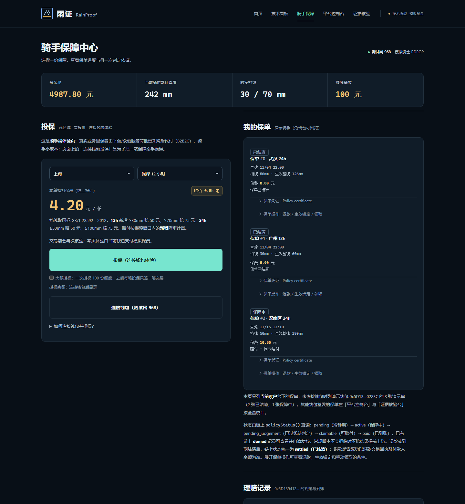
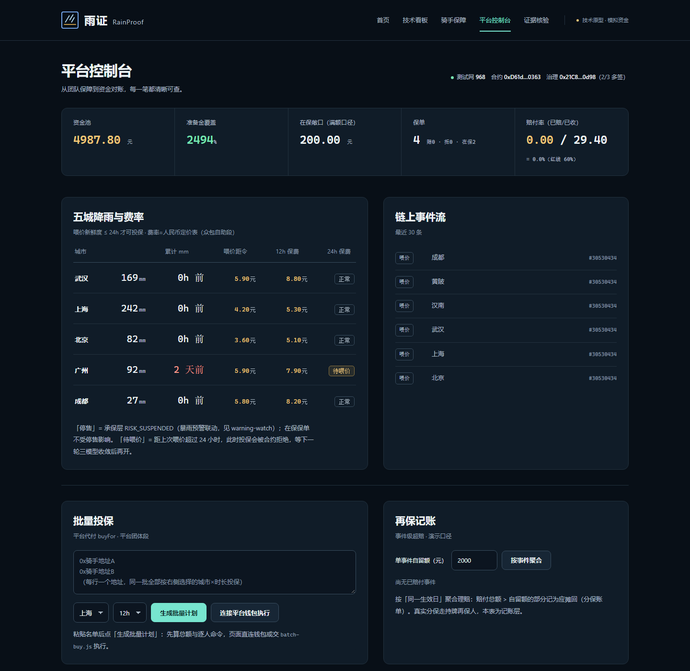
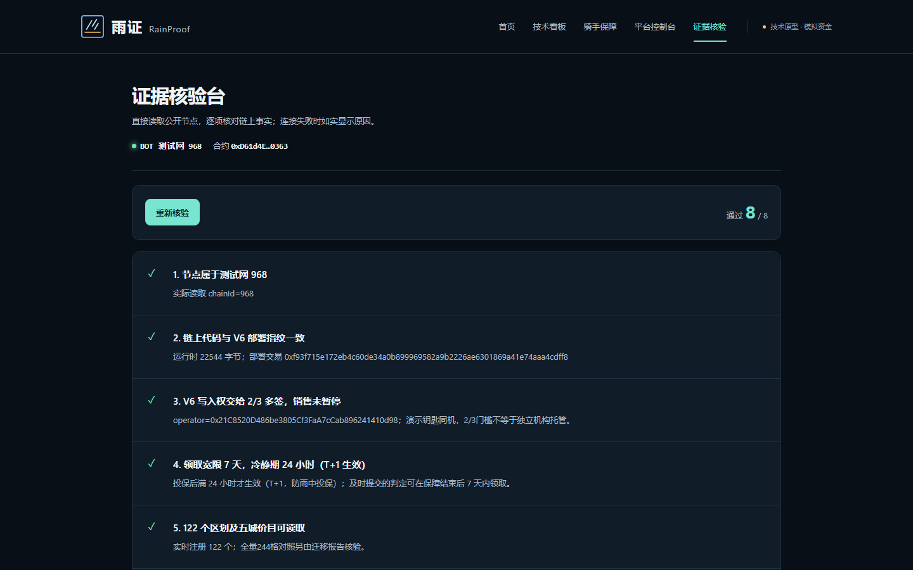
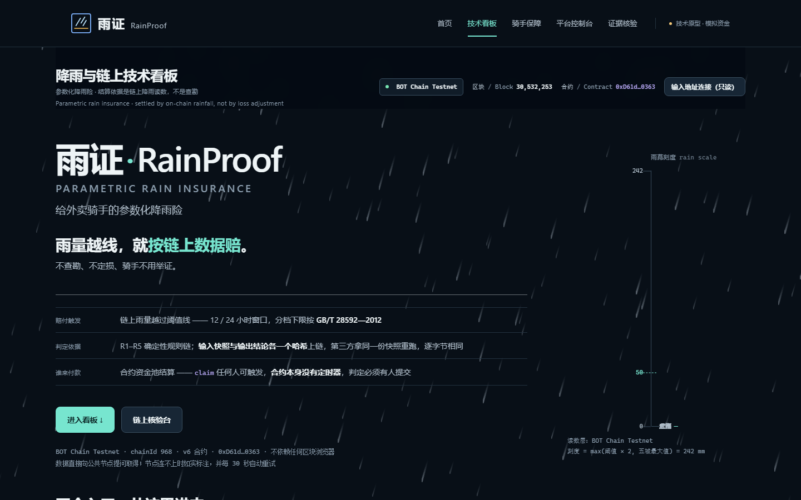

| # | 区划 | 时长 | 保费 | 生效基线 | 到期（北京） | 状态 | 给付 |
|---|---|---|---|---|---|---|---|
| #0 | 武汉 420100 | 24h | 8.80 | 126 mm | 2026-11-05 22:00 | 已结清 | 0.00 |
| #1 | 广州 440100 | 12h | 5.90 | 60 mm | 2026-11-05 10:00 | 已结清 | 0.00 |
| #2 | 汉南 420113 | 24h | 10.50 | 180 mm | 2026-11-16 12:10 | 保障中 | — |
| #3 | 上海 310100 | 12h | 4.20 | 242 mm | 2026-11-16 01:34 | 保障中 | — |
| 城市 / 区划 | 链上累计 | 12h 保费 | 24h 保费 | 喂价年龄 | 能否投保 |
|---|---|---|---|---|---|
| 武汉 420100 | 169 mm | 5.90 | 8.80 | 0.3 h | 可投 |
| 汉南 420113 | 180 mm | 6.70 | 10.50 | 0.3 h | 可投 |
| 黄陂 420116 | 182 mm | 4.70 | 6.00 | 0.3 h | 可投 |
| 北京 110100 | 82 mm | 3.60 | 5.10 | 0.3 h | 可投 |
| 上海 310100 | 242 mm | 4.20 | 5.30 | 0.3 h | 可投 |
| 成都 510100 | 27 mm | 5.80 | 8.20 | 0.3 h | 可投 |
| 广州 440100 | 92 mm | 5.90 | 7.90 | 48.9 h | 暂停（喂价超 24h） |



